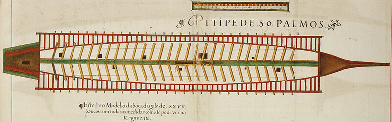

Ранее мы рассмотрели вопрос о том, как рубили мачты на античных галерах и в раннее средневековье. Сейчас посмотрим на галеры XVI века.
Возьмем для примера галеры Франции. Как мы уже неоднократно отмечали, морская терминология французских галер кардинально отличалась от терминов, употребляемых на парусных кораблях. Чтобы в дальнейшем не возвращаться к мачтам галер этого периода, рассмотрим их подробнее. 
Галеры Средних веков имели, как правило, одну мачту. На галерах же XVI века почти всегда ставили две мачты. Грот-мачта (на французском парусном флоте – grand mât) называлась l'arbre de mestre, фок-мачта (mât d'avant) – l'arbre de trinquet. Квадратный в сечении топ мачты имел в высоту 1,46 м и именовался calcet, основная часть мачты от топа до уровня палубы была круглой в сечении, а ее нижняя часть – восьмигранной. Вокруг топа размещался наблюдательный пост галеры, своеобразный марс (hune) в форме корзины, которая называлась gabie. От этого слова произошло название профессии на парусном судне, воспетой многими маринистами – марсовые (gabier), («в число которых, - как писал Г.Мелвилл в своем «Белом бушлате», - попадают самые расторопные матросы») и название одного из самых распространенных транспортных судов – габара. Помните, как мы рассматривали появление корбиты – корабля с корзиной на мачте. Получается, что и габара своим появлением также обязана корзине.
Длинные реи латинского паруса – антенны – были составлены из двух частей. Верхняя часть называлась penne, а нижняя – quart. Когда шли на веслах, реи обычно спускали, чтобы снизить сопротивление воздуха. Две короткие мачты, не обремененные такелажем, не оказывали сильного сопротивления движению корабля, и постепенно требование рубить мачту при движении на веслах стало необязательным. Тем не менее совсем от этой традиции не отказались. Имелись даже специальные термины: arborer – поставить мачту, и dès-arborer – срубить мачту. Отверстия в палубе для прохода мачты (пяртнерсы) – имеющие удлиненную форму, назывались le canal. Специальные балки, крепящие мачту, – карлингсы – с той стороны, в которую убирали мачту, делались съемными. Необходимость рубить мачты вызывала еще одну конструктивную особенность – фок-мачта была смещена относительно диаметральной плоскости корабля к левому борту, как раз на столько, чтобы грот-мачта не мешала ее размещению вдоль средней линии корабля, когда необходимо было рубить рангоут. Это смещение также обеспечивало откат среднего – куршейного – орудия галеры. Пятка мачты – шпор - устанавливалась в степс, который назывался michon.
Шесть средних поясьев палубного настила изготавливали из дуба. В них и вырезали le canal для прохода мачты. Длина его была 5 м 20 см (по некоторым данным – около четырех метров), ширина – 73 см. Снизу прочность палубы в месте этого выреза обеспечивалась специальными продольными балками, которые на галерном языке назывались bisheries du canal.
Здесь уместно вновь обратиться к Снисаренко. Мы уже обращали внимание на некорректность его высказываний относительно соблюдения высокой точности при указании размеров галеры и отдельных ее частей. Размеры эти до сантиметра были установлены на заседаниях специального профессионального совета кораблестроителей. Отклонение от них не допускалось. Другой вопрос – откуда брать эти цифры. Однозначно – их надо брать из первоисточников. Если пользоваться позднейшими работами, трудами «комментаторов» - не исключается возможность впасть в ошибку. Поэтому, как любил говорить нам в годы учебы профессор Жуковский, читавший теплотехнику, «избегайте комментаторов, учитесь по первоисточникам». Тем более, что в нашем случае таких первоисточников не так уж много. Чаще всего для галер XIV-XV веков используют Libro di Marineria (Anonimous, 1410 г.), которая была частично опубликована О.Жалем в его Archéologie Navale (Paris, Arthus Bertrand Éditeur, 1840) в Mémoire № 5 под названием Fabrica di Galere, под которым она и известна сейчас. Для галер XVI века – Nautica Mediterranea, принадлежащая перу Bartolomeo Crescenzio Romano и опубликованная в Риме в 1601 году. Еще одним полезным источником является Livro de Traças de Carpintaria , написанная португальским кораблестроителем Manoel Fernandez и датируемая 1616 годом. Из этой последней книги мы и воспроизвели чертеж галеры, на котором (редкий случай) изображен le canal, или canale dell’ albero. Почему его, как правило, нет на других чертежах? Это объясняется тем, что куршея – продольный помост, идущий вдоль диаметральной плоскости галеры от носа до кормы, сверху покрывается своего рода паркетом – съемными поперечными брусками – quartiers, которые изготавливали из ореха.
В нос от грот-мачты устанавливалась дубовая плаха la chelamide высотой около трех метров и сечением 51х23 см, в которую упирался шпор мачты при ее подъеме и опускании. Верхняя часть плахи врезалась в балку, перекрывавшую канал к носу от грот-мачты. Когда мачта установлена, она на высоте куршейной рамы охватывается двумя балками из вяза размерами 100х38х27см – своеобразным замком, носовая часть которого фиксироавалась стационарно, а кормовая делалась съемной для обеспечения опускания мачты.
Аналогичная конструкция, только в меньших масштабах, сооружается и для фок-мачты. Ее шпор помещается на участке палубы, который называется conille (мы о нем уже упоминали, когда говорили о носовых загребных галеры).
Описанная вкратце конструкция использовалась в случаях, когда обстоятельства требовали рубить рангоут. Однако к этому маневру уже в XVI веке стали прибегать реже. Так, в 1560 г. галеры Пиали-Паши атаковали венецианскую галерную эскадру с ходу, не убирая парусов и рей, и добились успеха.
На русских галерах в основания мачт вставлялись мощные штыри, на которых, как на осях, мачты наклоняли и крепили вдоль корпуса.
Этими заметками мы завершили тему о том, зачем и каким образом рубили рангоут на галерах.